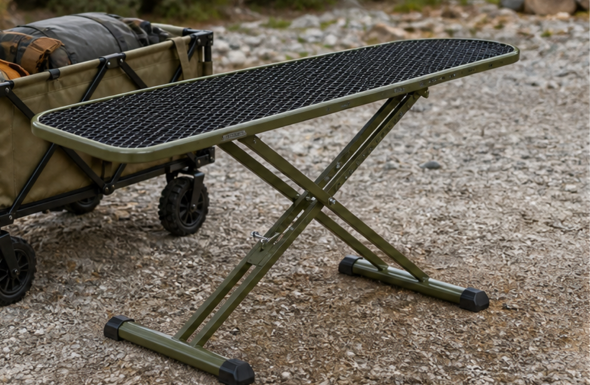
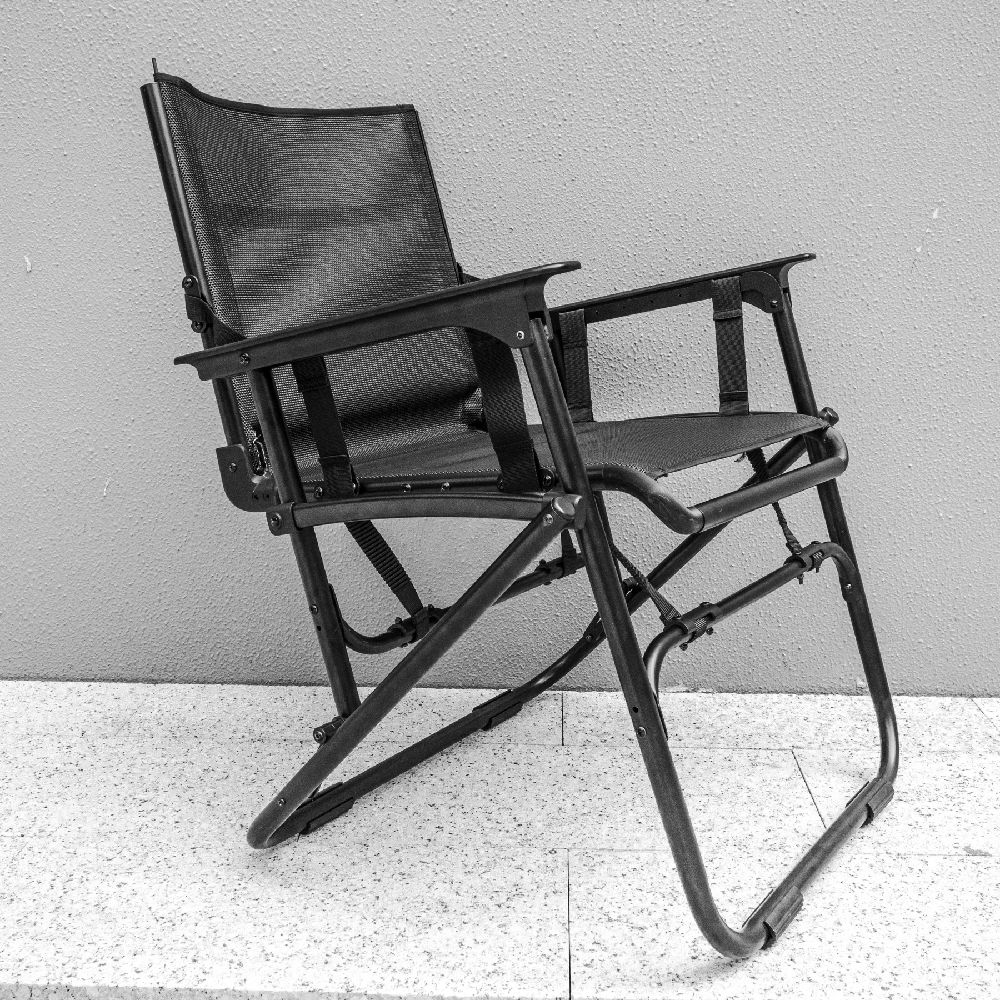
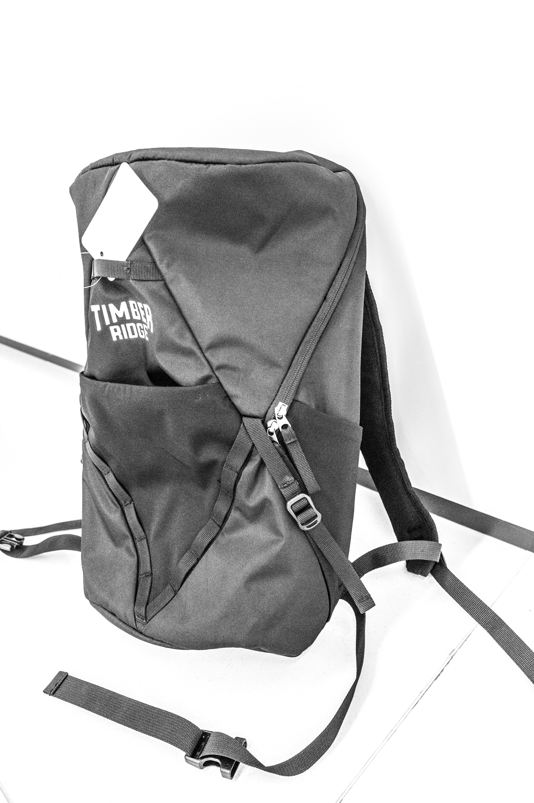
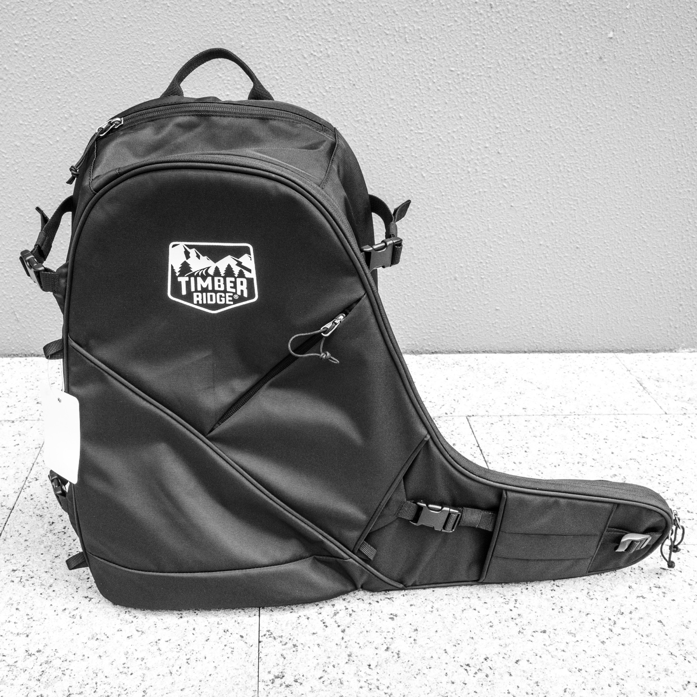
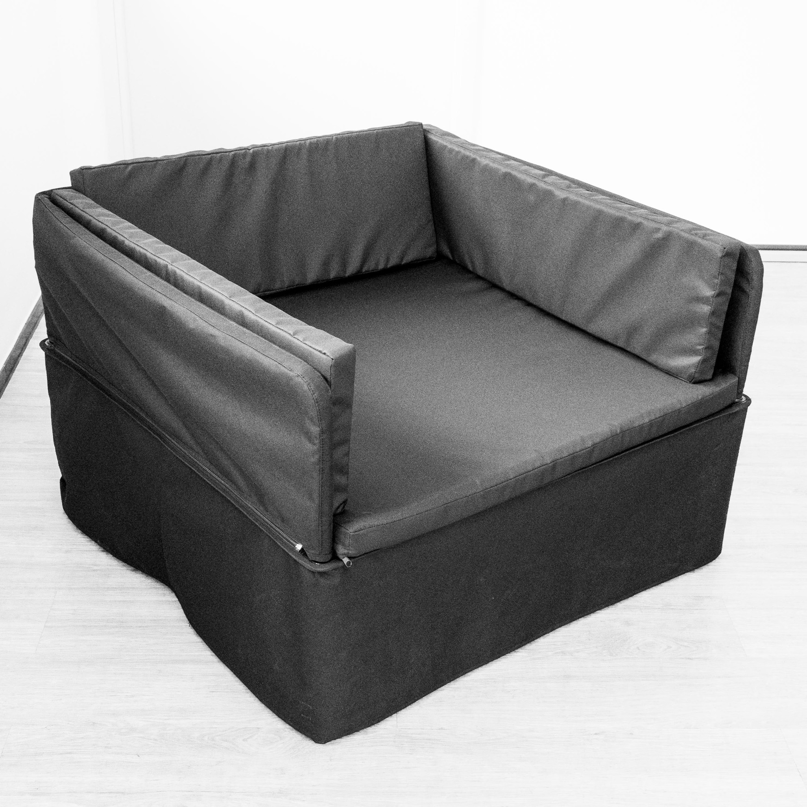
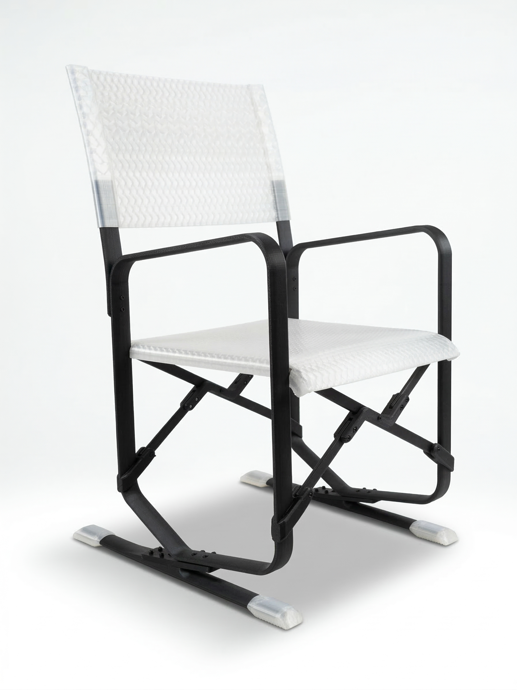
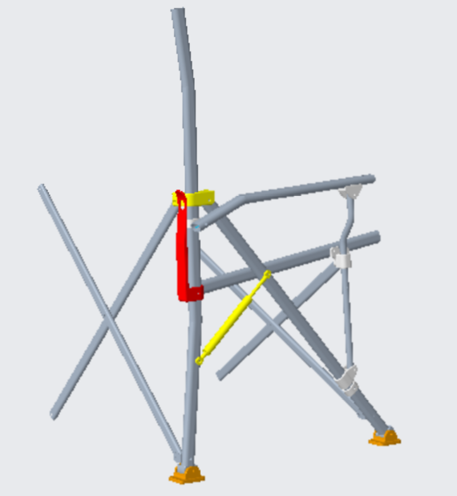

HengFeng / Westfield working review
Trip Recap: What Worked, What Needs To Improve
English review draft for the HengFeng recap meeting. Focus: sample execution, operating discipline, and concrete next steps after the June 2026 China trip.
English review draft for the HengFeng recap meeting. Focus: sample execution, operating discipline, and concrete next steps after the June 2026 China trip.
This meeting is not a blame session. The trip showed real progress and real operating gaps. The immediate need is to convert both into a clearer way of working.
Evaluate physical samples while Max was in China.
Make faster calls on what proceeds, what changes, and what stops.
Fix sample drift before it becomes a finished physical sample.
Put Hangzhou-side ownership behind daily follow-through.
The relationship and opportunity are strong. The operating gap is sample control: Max's time in China needs to create review and correction cycles, not first discovery of avoidable sample issues.
Direct access to HF leadership, factory teams, sample rooms, and photo review created real momentum.
Late, incomplete, or off-direction samples turned review time into avoidable issue discovery.
Approved CAD/spec direction controls the sample. Any deviation is flagged before build.
Direct conversations with Ben, Sunny, Jeff, Eva, and the working teams helped surface process issues quickly.
The Utility Board path became more practical after reviewing donor mechanisms and factory options.
Several product workstreams moved from broad ideas into specific card-level decisions and follow-up actions.
Photos, PDFs, measurements, and Trello comments created a stronger record for the next sample cycle.

Moved from concept to practical donor-frame path with cost, size, height, and sample timing defined.

Comfort direction is promising; motion and webbing structure still need iteration.

Strong first sample with limited revisions around straps, bottle pockets, and panel/fabric expression.

High-quality first sample; revisions are targeted rather than a full reset.
The samples were delivered while Max was here, but the missed end-of-May timing removed the best review cycle: day-1 review, revision, and a second look during the same trip.
Samples shown without final upholstery, cushions, or complete functional details cannot receive a full review.
When a sample does not follow approved CAD/spec direction, the meeting becomes a reset instead of a refinement.
If samples arrive during the trip instead of before it, the visit becomes first review instead of review plus correction.
CAD, PDFs, Trello comments, and sample notes define what should be built.
Construction or mechanism decisions are made without enough early review.
WF discovers major differences only after the physical sample is complete.
The review turns into issue discovery instead of final refinement and approval.
CAD/spec review has to catch interpretation issues before physical sampling. Once approved, CAD/spec direction controls the sample unless WF approves a change.


The sample needs to stay tied to the wedge, tube profile, and bounce-plate intent before physical build.

The gas-spring assist did not yet create meaningful auto or assist behavior, so force/leverage needs earlier validation.
Diamond and Spiral were strong samples, but end-of-May delivery would have allowed day-1 review and a same-trip revision cycle.
The comfort direction is good, but webbing attachment and motion tuning need complete validation before the next sample path is locked.
WF and HF review geometry, mechanism logic, materials, and construction before sampling.
HF flags any construction or manufacturing change before the sample is built.
Before travel-critical review, confirm frame, soft goods, finish, and full assembly are ready.
Max reviews a complete sample and decides proceed, revise, ship, or stop.
Approved CAD/spec direction controls the physical sample. Changes are documented before build, not explained after review.
These roles should be part of Westfield Industrial Design, just like Ben and Lia are part of the Industrial Design team. They support HF coordination from Hangzhou, but they are evaluated against Westfield standards.
Local design-side ownership makes the CAD/spec/sample discipline stick when Max is not physically in China.
Decide whether the first hiring need is one person or two people.
Hire Hangzhou-based Industrial Design team members who report into Max's workstream.
Performance review and evaluation use Westfield Industrial Design expectations, not HengFeng-only standards.
CAD coordination, sample-readiness checks, Trello/photo evidence, supplier questions, and corrected-sample timelines.
Flexible hours may be required for engineering/design bridge meetings at 9 or 10 PM Hangzhou time.
Confirm frame/suspension timing, corrected slipcover and cushion timing, and complete corrected sample review timing.
Agree that approved CAD/spec direction controls the physical sample unless Westfield approves a change.
Define who sends CAD, where comments live, who approves changes, and what signoff means before sampling.
Confirm 1-2 Industrial Design direct reports, hiring path, Westfield evaluation standards, and bridge-hours expectation.
Define what must be complete before a sample is scheduled for travel-critical review.
Photos, PDFs, measurements, comments, and decisions stay attached to the relevant S28 card.
Westfield and HengFeng can move faster together when approved direction is treated as the control point, samples are complete before travel-critical review, and Hangzhou support owns daily follow-through.